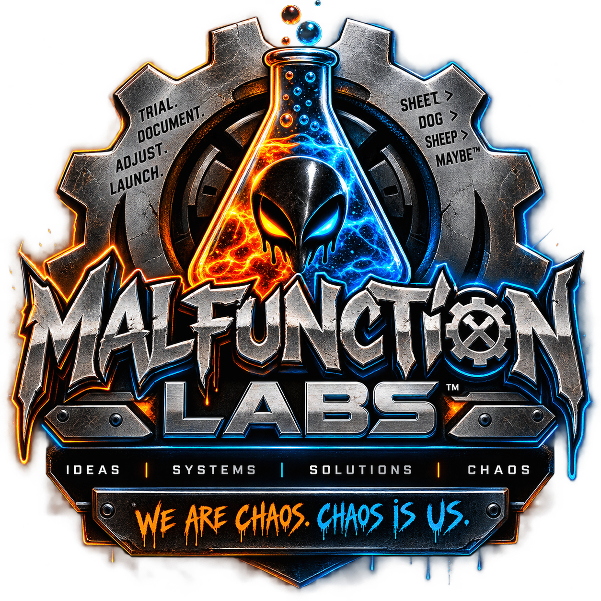

PROJECT // ACTIVE
Stop & Shop
A heavily expanded Schedule I mod project focused on progression, systems, characters, businesses and controlled chaos.
Testing

Independent games, software, media, experimental systems, mods, simulations and strange ideas built through practical testing instead of endless meetings.
Games, mods, software, simulators and tools currently moving through the Lab.
A heavily expanded Schedule I mod project focused on progression, systems, characters, businesses and controlled chaos.
Practical software projects, operational tools and custom systems designed around actual workflow problems.
Experimental simulator concepts built around physical interaction, progression loops and systems that make players want one more run.
The experimental side of Malfunction Labs: research, prototypes, AI-assisted workflows, 3D assets, audio, testing and production systems.
Concepts are tested quickly, documented honestly and adjusted until they either become useful or earn a place in the graveyard.
Modeling, asset research, environmental pieces, props, game-ready objects and other things someone probably broke.
Sound effects, score, voice, mixing and sonic identity for games, media and experiments.
Development footage, shorts, behind-the-scenes chaos and stories from building a studio that probably should not have been given this much technology.
The actual story of building Malfunction Labs from mods, experiments, AI disasters, accidental systems and enough source material to concern future historians.
Quick experiments, disasters, breakthroughs, character moments and the occasional digital workplace fatality.
The surviving evidence. Development notes, experiments, lessons, failed assumptions and whatever the hell happened yesterday.
Malfunction Labs™ is an independent creative and technical studio exploring games, software, media, simulation, automation and unusual ideas.
The goal is simple: let useful ideas survive long enough to become real things.
We do not need every idea to work.
We need to test it honestly, learn something useful, preserve what mattered, adjust the design, and move forward.
Trial. Document. Adjust. Launch.